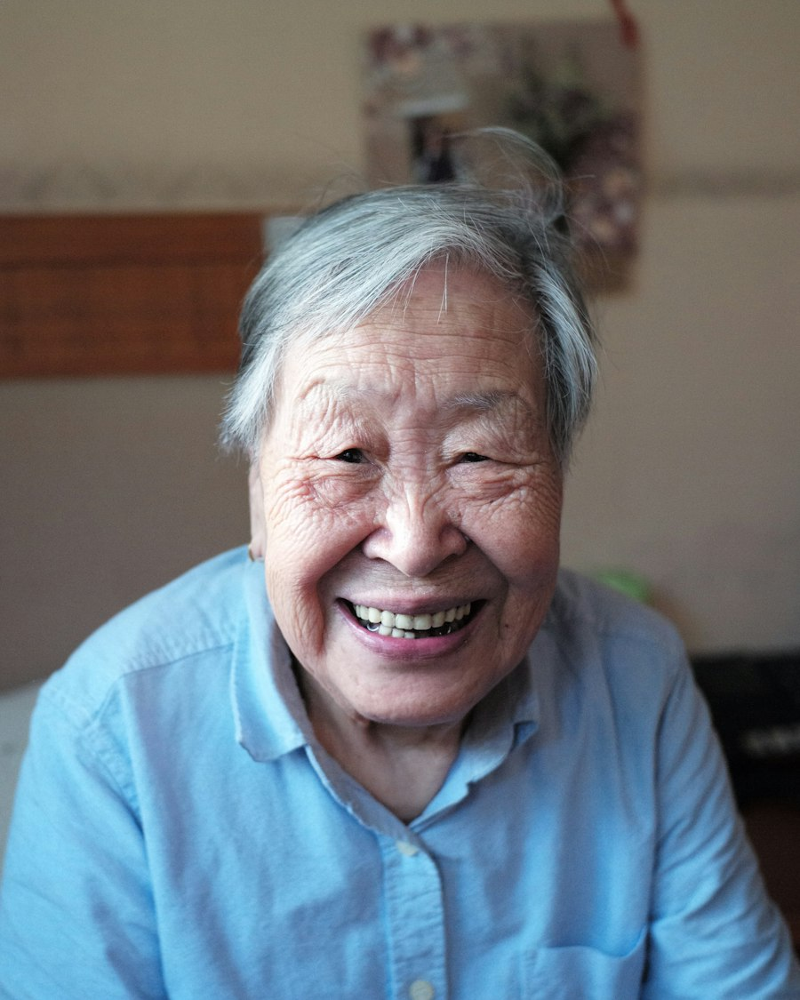

照护康复的每一个阶段
四项服务，一套标准：持证护工、过程留痕、收费透明。很多家庭会随着家人从医院回到家中，先后用到不止一项。
在康复
康复护理
恢复得快不快，很大程度取决于治疗时段之外的坚持。我们的护工按照医生和康复治疗师制定的方案，每天协助患者练习。
适合：骨科术后与骨折恢复期、脑卒中恢复期，以及重症康复科的患者。
服务内容
- 床旁关节活动辅助
- 体位摆放与床椅转移
- 下床与行走练习
- 配合吞咽与进食训练
- 每次训练记入护理日志
- 进展同步给医护团队
护工负责协助与记录，不替代专业康复治疗。

在家中
居家照护
出院后的居家帮助，或在长者独自生活变得吃力时的日常照护。护工可以上门几个小时、留宿过夜，也可以替家人顶一段班。
适合：出院回家的头几周、独居长者，以及需要喘口气的家庭照护者。
服务内容
- 洗漱、穿衣与助浴
- 备餐与简单家务
- 陪同就医复诊
- 夜间照护
- 家庭照护者喘息服务
- 陪伴与聊天
居家照护按小时或按班次计费，上门评估后报价。
长期管理
健康管理
对患有慢性病的长者来说，早一点发现细微变化，往往最关键。记录、提醒和定期回访，交给我们。
适合：高血压、糖尿病、心脏疾病等慢病长者，以及出院后需要跟进随访的患者。
服务内容
- 出院护理记录交接
- 血压、血糖、体温记录
- 按时用药提醒
- 复诊预约提醒
- 定期电话回访
- 记录与家属共享
健康管理是对医生诊疗的补充，不替代医疗服务。
不确定该选哪项服务？
致电或预约时选择“不确定”，护理顾问会评估后为您推荐。